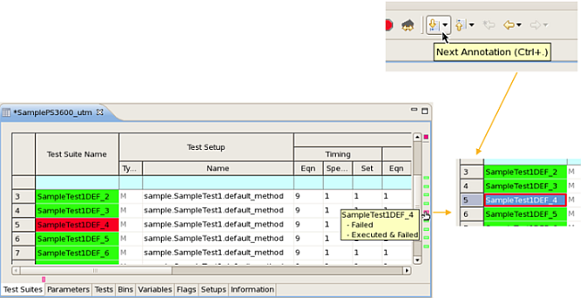
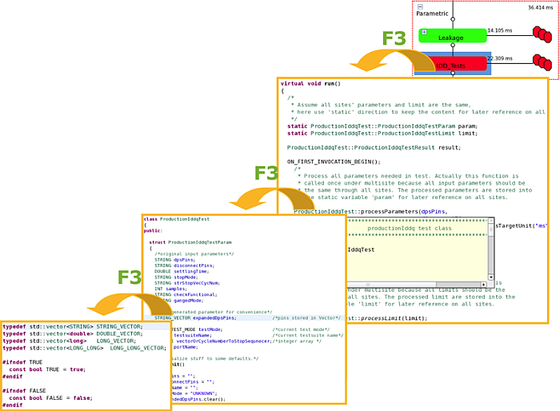
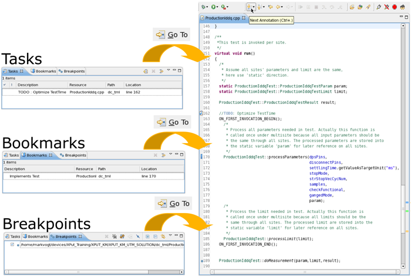
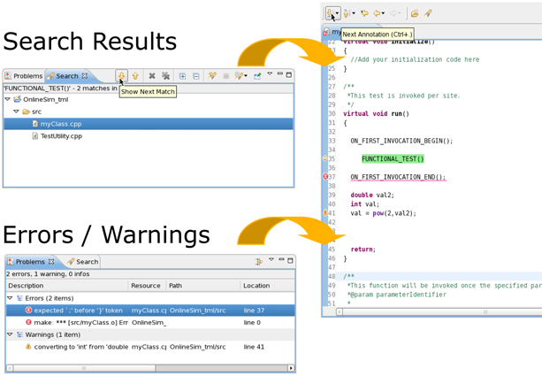

Debugging test methods: Finding and moving to information
Quickly jump to failing test suites
On the Test Suite tab of the Flow Data editor:
- Use the buttons of the Annotation toolbar
- Press Ctrl+. (dot)
- Click the marker of the annotation bar

Use the function key F3 to jump quickly to details of the selected element
- From test suite to source code
- From the source code to the function
- From the function to the declaration

On one of the following views, select the line and click the Go to button to jump to related line in the test method
- From the Task view (for details on the Task view, click the Task view tab and press Shift+F1 to open the context sensitive help)
- From the Bookmarks view
- From the Breakpoint view

On one of the following views, double click the message line to jump to related line in the test method
- From the Search results view
- From the Error log or Problems View

Functional changes
- Introduced in SmarTest 7.1.3